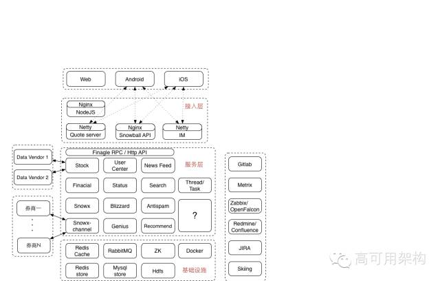

目录 [−]
本文根据唐福林老师在“高可用架构”微信群所做的《股市风暴下的雪球架构改造经验分享》整理而成，转发请注明来自微信公众号ArchNotes。
唐福林，雪球首席架构师，负责雪球业务快速增长应对及服务性能与稳定架构优化工作。毕业于北京师范大学，硕士学位。之前曾任微博平台资深架构师，微博技术委员会成员。长期关注并从事互联网服务后端性能及稳定性架构优化工作。
雪球公司介绍
雪球 聪明的投资者都在这里。
- web 1.0：新闻资讯，股价信息，K线图
- web 2.0：SNS 订阅，分享，聊天
- web 3.0：移动 APP，交易闭环
雪球现在员工数还不到100，其中技术人员占一半。去年9月C轮融资4kw刀。我们现在的技术栈由下列组件组成：Java，Scala，Akka，Finagle，Nodejs，Docker ，Hadoop。我们当前是租用IDC机房自建私有云，正在往“公私混合云”方向发展。
在雪球上，用户可以获取沪深港美2w+股票的新闻信息，股价变化情况，也可以获取债券，期货，基金，比特币，信托，理财，私募等等理财产品的各类信息，也可以关注雪球用户建立的百万组合，订阅它们的实时调仓信息，还可以关注雪球大V。雪球当前有百万日活跃用户，每天有4亿的API调用。App Store 财务免费榜第 18 名。历史上曾排到财务第二，总免费榜第 19。
雪球当前总体架构

作为一个典型的移动互联网创业公司，雪球的总体架构也是非常典型的设计：
- 最上层是三个端：web端，android端和iOS端。流量比例大约为 2：4：4 。web3.0 的交易功能，在 web 端并不提供。
- 接入层以及下面的几个层，都在我们的自建机房内部。雪球当前只部署了一个机房，还属于单机房时代。正在进行“私有云+公有云混合部署”方案推进过程中。
- 我们当前使用 nodejs 作为 web 端模板引擎。nodejs 模块与android 和 ios 的 app 模块一起属于大前端团队负责。
- 再往下是位于 nginx 后面的 api 模块。跟 linkedin 的 leo 和微博的 v4 一样，雪球也有一个遗留的大一统系统，名字就叫 snowball 。最初，所有的逻辑都在 snowball 中实现的。后来慢慢的拆出去了很多 rpc 服务，再后来慢慢的拆出去了一些 http api 做成了独立业务，但即便如此，snowball 仍然是雪球系统中最大的一个部署单元。
- 在需要性能的地方，我们使用 netty 搭建了一些独立的接口，比如 quoto server，是用来提供开盘期间每秒一次的股价查询服务，单机 qps 5w+，这个一会再细说；而 IM 服务，起初设计里是用来提供聊天服务，而现在，它最大的用途是提供一个可靠的 push 通道，提供 5w/s 的消息下发容量，这个也一会再细说。
- 雪球的服务化拆分及治理采用 twitter 开源的 finagle rpc 框架，并在上面进行了一些二次开发和定制。定制的功能主要集中在 access log 增强，和 fail fast，fail over 策略及降级开关等。 finagle 的实现比较复杂，debug 和二次开发的门槛较高，团队内部对此也进行了一些讨论。
- 雪球的业务比较复杂，在服务层中，大致可以分为几类：第一类是web1.0，2.0 及基础服务，我们称为社区，包括用户，帖子，新闻，股价，搜索等等，类比对象就是新浪财经门户+微博；第二类是组合及推荐，主要提供股票投资策略的展示和建议，类比对象是美国的motif；第三类是通道，类似股市中的“支付宝”，接入多家券商，提供瞬间开户，一键下单等等各种方便操作的功能。
- 雪球的业务实现中，包含很多异步计算逻辑，比如搜索建索引，比如股票涨跌停发通知，比如组合收益计算等等，为此，我们设计了一个独立的 Thread/Task 模块，方便管理所有的后台计算任务。但随着这些 task 越来越多，逻辑差异越来越大，一个统一的模块并不是总是最佳的方案，所以，我们又把它拆成了两大类：流式的，和批量式的。
- 雪球的推荐体系包括组合推荐“买什么”和个性化推荐。我们最近正在重新梳理我们的大数据体系，这个感兴趣的话可以单聊。
- 最下面是基础设施层。雪球基础设施层包括：redis，mysql，mq，zk，hdfs，以及容器 docker。
- 线上服务之外，我们的开发及后台设施也很典型：gitlab开发，jenkins打包，zabbix 监控系统向 openfalcon 迁移，redimine向confluence迁移，jira，以及内部开发的 skiing 后台管理系统。
雪球架构优化历程
首先描述一下标题中的“股市动荡”定语修饰词吧：
- 上证指数从年初的3000点半年时间涨到了5000多，6月12号达到最高点5200点，然后就急转直下，最大单日跌幅 8.48%，一路跌回4000点以下。最近一周都在3900多徘徊。
- 3月最后一周，A股开户 166万户，超过历史最高纪录 2007年5月第二周165万户。
- 4月份，证监会宣布A股支持单用户开设多账户。
- 6月底，证金公司代表国家队入场救市。
- 7月份，证监会宣布严打场外配资。
挑战：小 VS 大
- 小：小公司的体量，团队小，机器规模小
- 大：堪比大公司的业务线数量，业务复杂度，瞬间峰值冲击
雪球的业务线 = 1个新浪财经 + 1 个微博 + 1 个 motif + 1 个大智慧/同花顺。由于基数小，API调用瞬间峰值大约为平时峰值的 30+ 倍。
挑战：快速增长，移动互联网 + 金融，风口，A股大盘剧烈波动。
首先，在app端，在我们核心业务从 web2.0 sns 向 3.0 移动交易闭环进化的过程中，我们开发了一个自己的 hybrid 框架：本地原生框架，加离线 h5 页面，以此来支撑我们的快速业务迭代。当前，雪球前端可以做到 2 周一个版本，且同时并行推进 3 个版本：一个在 app store 等待审核上线，一个在内测或公测，一个在开发。我们的前端架构师孟祥宇在今年的 wot 上有一个关于这方面的详细分享，有兴趣的可以稍后再深入了解。
雪球App实践—构建灵活、可靠的Hybrid框架 http://wot.51cto.com/2015mobile/ http://down.51cto.com/data/2080769
另外，为了保障服务的可用性，我们做了一系列的“端到端服务质量监控”。感兴趣的可以搜索我今年4月份在环信SM meetup上做的分享《移动时代端到端的稳定性保障》。其中在 app 端，我们采用了一种代价最小的数据传输方案：对用户的网络流量，电池等额外消耗几乎为0
每个请求里带上前一个请求的结果
- succ or fail ： 1 char
- 失败原因：0 - 1 char
- 请求接口编号： 1 char
- 请求耗时：2 - 3 char
- 其它：网络制式，etc
炒股的人大多都会盯盘：即在开盘期间，开着一个web页面或者app，实时的看股价的上下跳动。说到“实时”，美股港股当前都是流式的数据推送，但国内的A股，基本上都是每隔一段时间给出一份系统中所有股票现价的一个快照。这个时间间隔，理论上是3秒，实际上一般都在5秒左右。 交了钱签了合同，雪球作为合作方就可以从交易所下属的数据公司那里拿到数据了，然后提供给自己的用户使用。
刚才介绍总体架构图的时候有提到 quote server ，说到这是需要性能的地方。
业务场景是这样的，雪球上个人主页，开盘期间，每秒轮询一次当前用户关注的股票价格变动情况。在内部，所有的组合收益计算，每隔一段时间需要获取一下当前所有股票的实时价格。起初同时在线用户不多，这个接口就是一个部署在 snowball 中的普通接口，股价信息被实时写入 redis ，读取的时候就从 redis 中读。后来，A股大涨，snowball 抗不住了。于是我们就做了一个典型的优化：独立 server + 本地内存存储。开盘期间每次数据更新后，数据接收组件主动去更新 quote server 内存中的数据。 后续进一步优化方案是将这个接口以及相关的处理逻辑都迁移到公有云上去。
对于那些不盯盘的人，最实用的功能就是股价提醒了。在雪球上，你除了可以关注用户，还可以关注股票。如果你关注的某只股票涨了或跌了，我们都可以非常及时的通知你。雪球上热门股票拥有超过 50w 粉丝（招商银行，苏宁云商）粉丝可以设置：当这支股票涨幅或跌幅超过 x%（默认7%）时提醒我。曾经连续3天，每天超过1000股跌停，证监会开了一个会，于是接下来2天超过1000股涨停
原来做法：
股票涨（跌）x%，扫一遍粉丝列表，过滤出所有符合条件的粉丝，推送消息
新做法：
预先建立索引，开盘期间载入内存
- 1%：uid1，uid2
- 2%：uid3，uid4，uid5
- 3%：uid6
- 问题：有时候嫌太及时了：频繁跌停，打开跌停，再跌停，再打开。。。的时候
内部线上记录：
- 4台机器。
- 单条消息延时 99% 小于 30秒。
- 下一步优化目标：99% 小于 10 秒
IM 系统最初的设计目标是为雪球上的用户提供一个聊天的功能
- 送达率第一
- 雪球IM：Netty + 自定义网络协议
- Akka ： 每个在线client一个actor
- 推模式：client 在线情况下使用推模式
- 多端同步：单账号多端可登录，并保持各种状态同步
移动互联网时代，除了微信qq以外的所有IM，都转型成了推送通道，核心指标变成了瞬间峰值性能。原有架构很多地方都不太合适了。
优化：
- 分配更多资源：推送账号actor池
- 精简业务逻辑：重复消息只存id，实时提醒内容不推历史设备，不更新非活跃设备的session列表等等
- 本地缓存：拉黑等无法精简的业务逻辑迁移到本地缓存
- 优化代码：异步加密存储，去除不合理的 akka 使用
akka这个解释一下：akka 有一个自己的 log adapter，内部使用一个 actor 来处理所有的 log event stream 。当瞬间峰值到来的时候，这个 event stream 一下子就堵了上百万条 log ，导致 gc 颠簸非常严重。最后的解决办法是，绕过 akka 的 log adapter，直接使用 logback 的 appender
线上记录：5w/s （主动限速）的推送持续 3 分钟，p99 性能指标无明显变化
7月10号我们在中国好声音上做了3期广告。在广告播出之前，我们针对广告可能带来的对系统的冲击进行了压力测试，主要是新用户注册模块，当时预估广告播出期间2小时新注册100万。
压测发现 DB 成为瓶颈：
- 昵称检测 cache miss > 40%
- 昵称禁用词 where like 模糊查询
- 手机号是否注册 cache miss > 80%
- 注册新用户：5 insert
优化：
- redis store：昵称，手机号
- 本地存储：昵称禁用词
- 业务流程优化：DB insert 操作同步改异步
下一步优化计划：
- 将 sns 系统中所有的上行操作都改成类似的异步模式
- 接口调用时中只更新缓存，而且主动设置5分钟过期，然后写一个消息到 mq 队列，队列处理程序拿到消息再做其它耗时操作。
- 为了支持失败重试，需要将主要的资源操作步骤都做成幂等。
前置模块HA
- 合作方合规要求：业务单元部署到合作方内网，用户的敏感数据不允许离开进程内存
- 业务本身要求：业务单元本身为有状态服务，业务单元高可用
解决方案：
- 使用 Hazelcast In-Memory Data Grid 的 replication map 在多个 jvm 实例之间做数据同步。
java 启动参数加上 -XX:+DisableAttachMechanism -XX:-UsePerfData，禁止 jstack，jmap 等等 jdk 工具连接
关于前置模块，其实还有很多很奇葩的故事，鉴于时间关系，这里就不展开讲了。以后有机会可以当笑话给大家讲。
组合净值计算性能优化
- 一支股票可能在超过20万个组合里（南车北车中车，暴风科技）
- 离线计算，存储计算后的结果
- 股价3秒变一次，涉及到这支股票的所有组合理论上也需要每 3 秒重新计算一次
大家可能会问，为什么不用户请求时，实时计算呢？这是因为“组合净值”中还包括分红送配，分股，送股，拆股，合股，现金，红利等等，业务太过复杂，开发初期经常需要调整计算逻辑，所以就设计成后台离线计算模式了。当前正在改造，将分红送配逻辑做成离线计算，股价组成的净值实时计算。接口请求是，将实时计算部分和离线计算部分合并成最终结果。
实际上，我们的计算逻辑是比较低效的：循环遍历所有的组合，对每个组合，获取所有的价值数据，然后计算。完成一遍循环后，立即开始下一轮循环。
优化：
- 分级：活跃用户的活跃组合，其它组合。
- 批量：拉取当前所有股票的现价到 JVM 内存里，这一轮的所有组合计算都用这一份股价快照。
关于这个话题的更详细内容，感兴趣的可以参考雪球组合业务总监张岩枫在今年的 arch summit 深圳大会上的分享：构建高可用的雪球投资组合系统技术实践 http://sz2015.archsummit.com/speakers/201825
最后，我们还做了一些通用的架构和性能优化，包括jdk升级到8，开发了一个基于 zookeeper 的 config center 和开关降级系统
聊聊关于架构优化的一些总结和感想
在各种场合经常听说的架构优化，一般都是优化某一个具体的业务模块，将性能优化到极致。而在雪球，我们做的架构优化更多的是从问题出发，解决实际问题，解决到可以接受的程度即可。可能大家看起来会觉得很凌乱，而且每个事情单独拎出来好像都不是什么大事。
我们在对一个大服务做架构优化时，一般是往深入的本质进行挖掘；当我们面对一堆架构各异的小服务时，“架构优化”的含义其实是有一些不一样的。大部分时候，我们并不需要（也没有办法）深入到小服务的最底层进行优化，而是去掉或者优化原来明显不合理的地方就可以了。
在快速迭代的创业公司，我们可能不会针对某一个服务做很完善的架构设计和代码实现，当出现各种问题时，也不会去追求极致的优化，而是以解决瓶颈问题为先。
即使我们经历过一回将 snowball 拆分服务化的过程，但当我们重新上一个新的业务时，我们依然选择将它做成一个大一统的服务。只是这一次，我们会提前定义好每个模块的 service 接口，为以后可能的服务化铺好路。
在创业公司里，重写是不能接受的；大的重构，从时间和人力投入上看，一般也是无法承担的。而“裱糊匠”式做法，哪里有性能问题就加机器，加缓存，加数据库，有可用性问题就加重试，加log，出故障就加流程，加测试，这也不是雪球团队工作方式。我们一般都采用最小改动的方式，即，准确定义问题，定位问题根源，找到问题本质，制定最佳方案，以最小的改动代价，将问题解决到可接受的范围内。
我们现在正在所有的地方强推3个数据指标：qps，p99，error rate。每个技术人员对自己负责的服务，一定要有最基本的数据指标意识。数字，是发现问题，定位根源，找到本质的最重要的依赖条件。没有之一。
我们的原则：保持技术栈的一致性和简单性，有节制的尝试新技术，保持所有线上服务依赖的技术可控，简单来说，能 hold 住。
能用cache的地方绝不用db，能异步的地方，绝不同步。俗称的：吃一堑，长一智。
特事特办：业务在发展，需求在变化，实现方式也需要跟着变化。简单的来说：遗留系统的优化，最佳方案就是砍需求，呵呵。
当前，雪球内部正在推行每个模块的方案和代码实现的 review，在 review 过程中，我一般是这样要求的：
技术方案：
- 20倍设计，10倍实现，3倍部署
- 扩展性：凡事留一线，以后好相见
技术实现：
- DevOps：上线后还是你自己维护的项目，实现的时候记得考虑各种出错的处理
- 用户投诉的时候需要你去解释，实现的时候注意各种边界和异常
- 快速实现，不是“随便实现”，万一火了呢：性能，方便扩容
Q&A
Q1：im能详细讲下吗？
关于雪球 im 和推模式，有群友问到了，我就再展开讲一下（其实下周我约了去给一家号称很文艺的公司内部交流IM实现）：雪球自己设计了一套 IM 协议，内部使用 netty 做网络层，akka 模式，即为每一个在线的 client new 一个 actor ，这个 actor 里面保持了这个在线 client 的所有状态和数据。如果有新消息给它，代码里只要把这个消息 tell 给这个 actor 即可。actor 里面会通过 netty 的 tcp 连接推给实际的 client。
问一个小问题，App的接口可用上报里 如果是网络问题引起的故障 怎么兼容？
app 如果发起一个请求，因为网络问题失败了（这其实是我们的上报体系设计时，最主要针对的场景），那么 app 会把这个失败的请求记录到本地内存，等下一次发请求时，把上次的这个失败请求结果及相关信息带上。如果连续多次失败，当前我们的做法是，只记录最后一次失败的请求结果，下次成功的请求里会带上它。
监控系统为何从zabbix切换到openfalcon，原因是什么？
简单来说，机器数上百之后，zabbix就会有很多问题，个人感受最大的问题是，新增 key 非常不方便。小米因为这些问题，自己做一个 falcon，然后开源了。我们碰到的问题很类似，看了看小米的，觉得可以不用自己再折腾了，就用它了。
前置模块的Hazelcast In-Memory Data Grid 的稳定性怎么样，采用的考虑是什么呢？用sharding redis 怎么样呢？
稳定性不能算很好，只能说还好。因为上线几个月，已经出了一次故障了。采用它，主要是开发简单，因为它就只有一个 jar 包依赖，不像其它备选项，一个比一个大。至于为什么不用 redis，因为这是要部署到别人的内网的啊，更新很麻烦的啊，运维几乎没有的啊，各种悲剧啊。我们当前为了做到“一键更新”，把shell脚本和所有jar包都打成一个自解压的文件这事我会随便说吗？
雪球im如何判断用户是否在线？要给给定的用户发消息，怎么找到对应的actor？不在线的时候消息如何存储？
IM 用户在线判断（转化成指定的 actor 是否存在）和路由，这些都是 akka 内置提供的，感兴趣的，算了，我个人建议是不要去碰 akka 这货。用户不在线的时候，消息会进 mysql 和 redis
大师，为了支持失败重试，需要将主要的资源操作步骤都做成幂等。这个怎么理解，具体怎么玩？
举个例子：用户发一个帖子，api调用的时候已经给用户返回成功了，但后端写 db 的时候超时了，怎么办？不能再告诉用户发帖失败了吧？那就重试重试再重试，直到写 db 成功。但万一重试的时候发现，上次写入超时，实际上是已经写成功了呢？那就需要把这个写入做成幂等，支持多次写入同一条记录。简单来说，db 层就是每个表都要有业务逻辑上的唯一性检查
另外用户对应的Actor需不需要持久化呢？
actor 不持久化。重启 server 的话，app 端会自动重连的
基于zookeeper的config center设计有什么指导原则或遇到什么坑吗？如何方便业务开发修改又不影响到其他？
我们的 config center 有两个版本：一个是参考 netflix 的 archaius，另一个是纯粹的 zk style 。风格问题，我个人的回答是：大家喜欢就好。 config center 本来就不影响业务开发修改啊？没有太明白问题点，sorry
刚才的追问下 如果只报最后一次故障 那么会不会不能准确评估影响？
不会的，因为这种情况一般都是用户进电梯或者进地铁了，呵呵
rpc是怎么选的呢，比如为什么不用thrift呢？
finagle 底层就是 thrift 啊。就我个人而言，我个人对于任何需要预先定义 proto 的东西都深恶痛绝。所以现在我们也在尝试做一个基于 jsonrpc 的简单版本的 rpc 方案，作为我们后续微服务容器的默认 rpc
实质上是用actor包住了netty的session吧？不建议用akka的原因是量大了后承载能力的问题吗？雪球im的dau约在50万左右吧？
是的，actor 内部持有网络连接。不建议用 akka 的原因是：我个人的原则是，我 hold 不住的东西就不做推荐。就当前来说，我觉得我 hold 不住 akka：使用太简单太方便，但坑太多，不知道什么时候就踩上了，想用好太难了
唐老师您好，雪球的架构中，rabbitmq 主要用在哪些场景，rabbit的 负载是通过哪些手段来做呢?
当前我们的 mq 功能都是有 rabbitmq 提供的，我们在内部封装了一个叫 event center 的模块，所有的跟 queue 打交道的地方，只需要调用 event center 提供的 api 即可。我们对于 rabbit 并没有做太多的调优，大约也是因为现在消息量不大的缘故。后续我们的大数据体系里，queue 的角色会由 kafka 来承担
唐大师，关于交易这块，能说下你们的账户体系吗？
股票交易跟支付宝模式还是很大不一样的，本质上，雪球上只是一个纯粹的通道：钱和股票都不在雪球内部。所以，我们当前的账户体系就像我们页面上描述的那样：将用户的券商账号跟雪球id做绑定
性能规划上有什么经验或者推荐资料阅读吗？谢谢。
通读 allthingsdistributed 上的精华文章 http://www.allthingsdistributed.com/
唐大师，雪球的docker是怎么用？怎么管理的？
参考雪球sre高磊在 dockercn 上的分享
追加一个问题：对业务合规要求的需求不是很了解，但是“-XX:+DisableAttachMechanism -XX:-UsePerfData”这样无法禁止“jstack -F”的吧，只是禁止了普通的jstack。
应该是可以禁止的，因为 jvm 内部所有挂载机制都没有启动，jstack 加 -f 也挂不上去。要不我一会测一下再给你确认？
为什么用kafka替换rbt?
因为 rbt 是 erlang 写的啊，我不会调优啊，出了问题我也不会排查啊。事实上，event center 模块极偶发的出现丢消息，但我们一直没有定位到根源。所以，只好换了
请问百万活跃用户session是怎么存储的？怎么有效防止大面积退出登录？
用户登录 session 就存在 jvm 内部。因为是集群，只要不是集群突然全部挂，就不会出现大面积重新登录的
每个请求里带上前一个请求的结果,这个得和用户请求绑定上吧？
收集 app 端的访问结果，大部分情况下用于统计服务质量，偶尔也用于用户灵异问题的追逐
akka的设计居然和Erlang的抢占式调度很像，也存在单进程瓶颈问题？
可以这么说，主要是它的 log actor 是单个的
集群环境下如何保存在jvm内部？各个jvm如何共享的？
我们的 im 系统其实分 2 层，前面有一层接入层，后面是集群。接入层到集群的链接是按 uid 一致性 hash。简单来说，一个用户就只连一个 jvm 服务节点。所以我们只在收盘后更新服务。在雪球，盘中严禁更新服务的
接入层的实现架构方便描述一下吗？
雪球IM的接入层分为2类：app接入层和web接入层。app接入层是一个 netty 的 server，开在 443 端口，但没有使用 ssl ，而是自己用 rsa 对消息体加密。netty 收到消息后，解包，根据包里的描述字段选择发往后端的业务节点。web 接入层是一个基于 play 的 webserver，实现了 http 和 websocket 接口，供 web 使用
雪球App是一款解决股票买什么好问题的手机炒股应用。因为独特的产品设计和运营策略，雪球App在市场上拥有领先的份额和影响力。雪球正在招聘，热招职位请参考 http://xueqiu.com/about/jobs (可点击阅读原文进入) 我们在望京 SOHO 等你！
本文策划 庆丰@微博, 内容由王杰编辑，庆丰校对与发布，Tim审校，其他多位志愿者对本文亦有贡献。读者可以通过搜索“ArchNotes”或长按下面图片，关注“高可用架构”公众号，查看更多架构方面内容，获取通往架构师之路的宝贵经验。转载请注明来自“高可用架构（ArchNotes）”公众号，敬请包含二维码！